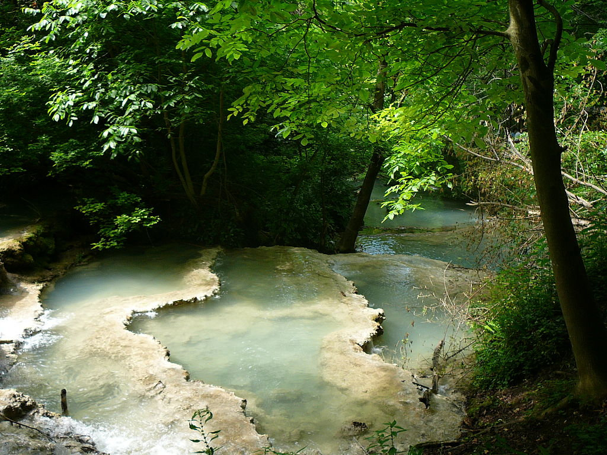
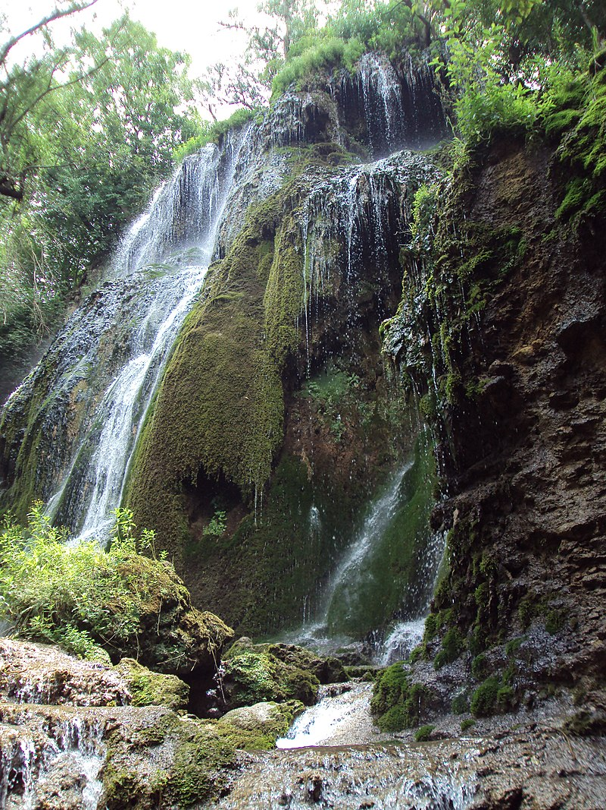
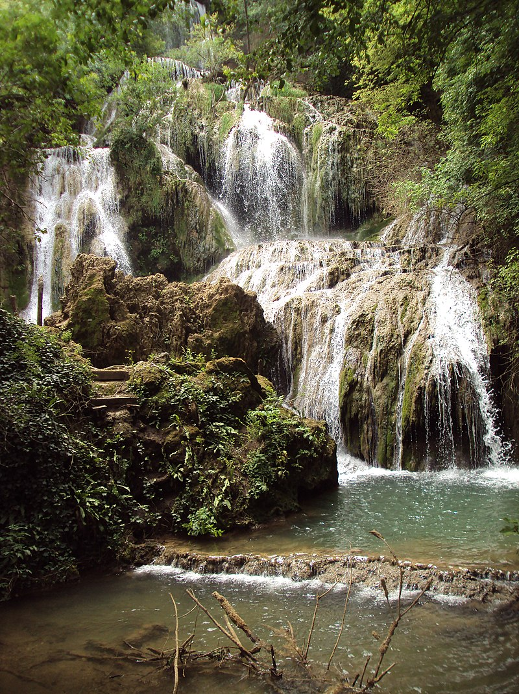

Крушу̀нски водопа̀ди (Крушунска бигорна каскада) – поредица от водопади в близост до село Крушуна, Община Летница, Северна България. Намират се на 6 км от град Летница и са известни със своята живописност. Водопадите представляват дълга травертинова (бигорна) каскада, отделните стъпала на която са самите водопади.
Крушунските водопади се намират на северния склон на Деветашкото плато в средния Предбалкан. Каскадата се образувала по протежение на река Пройновска извираща от Крушунската пещера.Първият и най-голям водопад от каскадата е 15-метровият Пръскалото който, заедно със следващите ненаименувани по-малки водопади, носят общото название Крушунски водопади. Цялото Деветашко плато е богато на карстови образувания. В непосредствена близост до водопадите се намират множество пещери някои от които са Маарата, Урушка Маара, Бонинска пещера и др. А на 15 км западно се намира известната Деветашка пещера.
Туристическата пътека започва от около половин километър южно от селото и до нея се достига по път около който има възможности за паркиране. Туристическата пътека криволичи нагоре срещу течението на реката и накрая достига до първият и най-голям водопад от каскадата – Пръскалото и пещерата, от която извира реката. Има множество мостове, позволяващи на туристите да разгледат местността.
